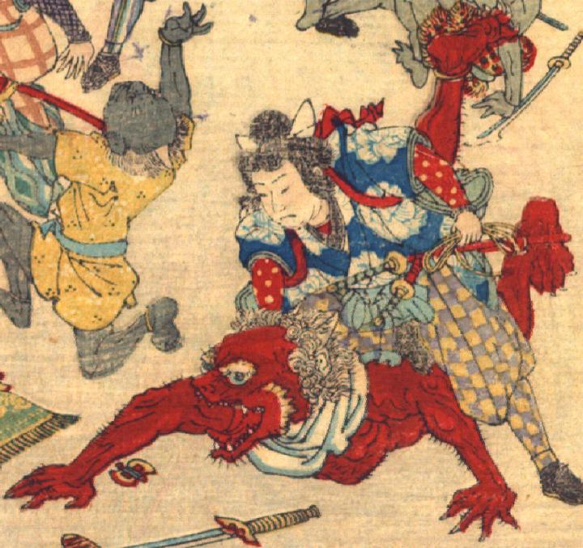

赤い肌の鬼。額は禿げ上がり、後頭部に縮れた毛が生えている。角が生えており、黄色い眉毛と頬ひげが生えている。目玉は丸く、大きく開いた口に鋭い牙が生えている。白い肩布を巻き、体には着物を着けていない。全身の筋肉は隆々としており、毛が生えている。手足に鋭い爪が生えている。桃太郎に圧し掛かられて、うつ伏せに倒れている。
著作者：David Thompson／出典：親書誌：U426_nichibunken_0116：Momotaro／日付：2006／資源識別子：U426_nichibunken_0116_0004_0004
Copyright (c)2010- International Research Center for Japanese Studies, Kyoto, Japan. All rights reserved.